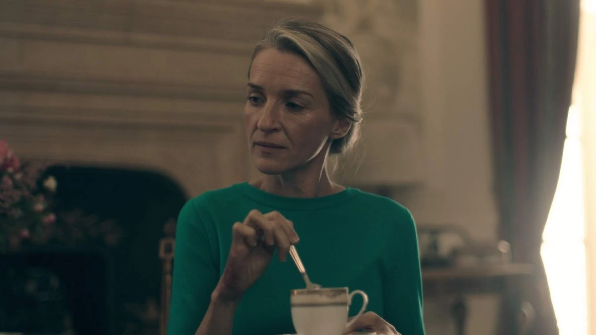
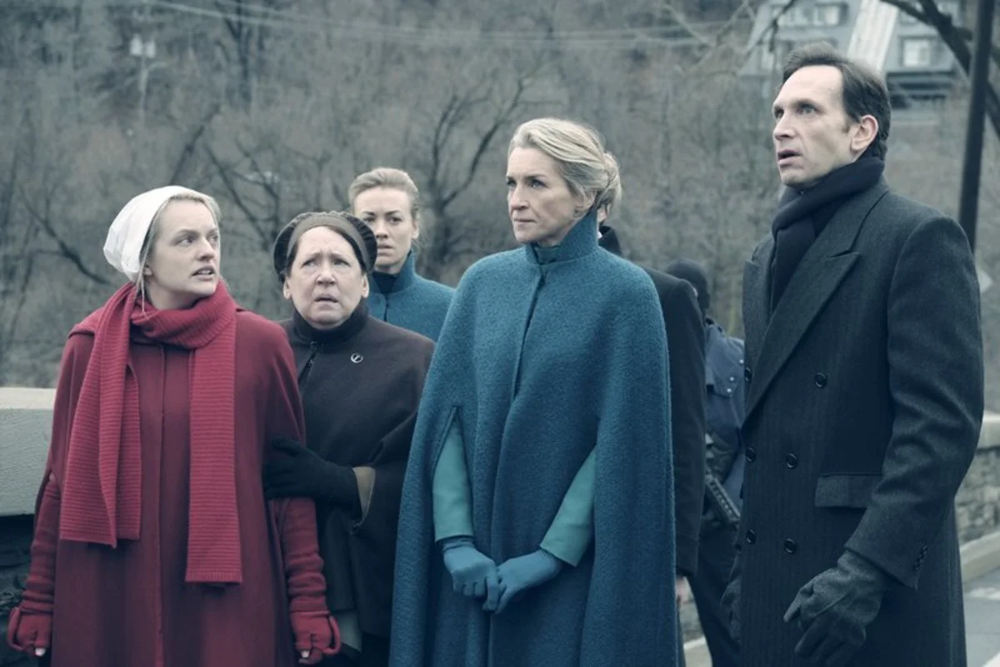
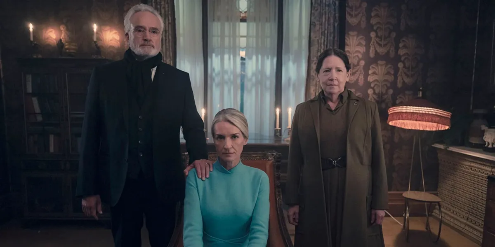

El Régimen De Gilead
Naomi Putnam / Naomi Lawrence

Naomi Putnam - Naomi Lawrence
Estatus, maternidad y una tardía evolución hacia la compasión
Naomi Putnam es una presencia constante a lo largo de la serie. Es interpretada por Ever Carradine.
Como Esposa de la élite, personifica inicialmente la frialdad y el apego a las apariencias, aunque su recorrido final muestra una profunda transformación.
Vida en Gilead y maternidad
Naomi estaba casada con Warren Putnam. Al no poder concebir, adoptó a la hija de Janine, a quien llamó Ángela aunque su madre biológica insistía en llamarla Charlotte.
Durante las primeras temporadas trató a las criadas como herramientas reproductivas y entendió a la bebé principalmente como un símbolo de estatus.
La ejecución de Warren por apostasía modificó drásticamente la posición de Naomi dentro de la jerarquía. Más adelante contrajo matrimonio con Joseph Lawrence y pasó a ser conocida como Naomi Lawrence.

Segundo matrimonio y redención

Matrimonio con Lawrence
Las circunstancias políticas posteriores a la muerte de Warren condujeron a su unión con Joseph, el arquitecto de la economía del régimen.
Liberación de Janine
En el episodio final, Naomi colaboró activamente con la Tía Lydia para conseguir la liberación de Janine.
Se despidió de Ángela y la entregó a su madre biológica, permitiendo que ambas se reunieran en libertad.
Momentos decisivos
Hitos de la evolución de Naomi
-
01
Maternidad impuesta
Adopta a la hija de Janine y la convierte en Ángela Putnam, símbolo de su posición social.
-
02
Segundo matrimonio
Tras la ejecución de Warren, se casa con Joseph Lawrence y cambia su lugar dentro del régimen.
-
03
Acto de compasión
Ayuda a liberar a Janine y le devuelve a Ángela para que madre e hija puedan marcharse juntas.